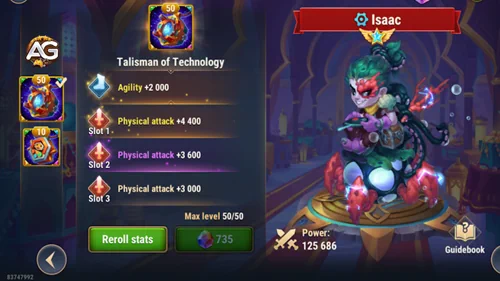
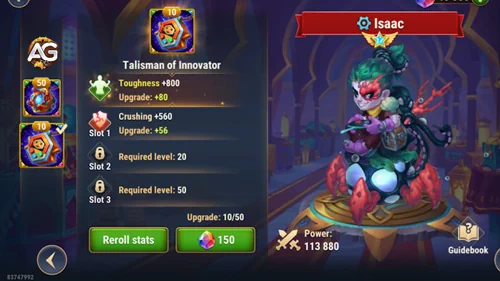
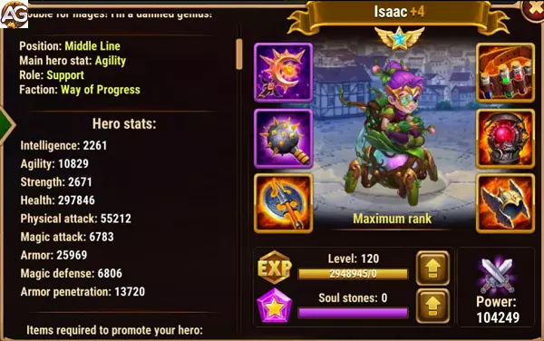
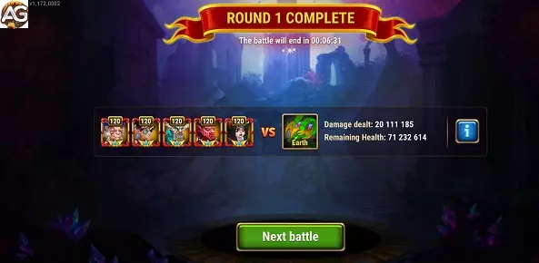

Guia do Isaac em Hero Wars Alliance: Builds, Talismãs e Equipes
- Por: Alexandre Domingos. .
Isaac é um herói poderoso e versátil da facção Progresso, conhecido por sua capacidade de gerar combinações de escudos fortes e amplificar o dano físico. Seja construindo uma linha de frente sólida ou montando uma composição ofensiva de alto impacto, Isaac pode mudar o rumo da batalha.
Neste guia, vamos explorar as estratégias mais eficazes para desbloquear todo o potencial de Isaac em Hero Wars Alliance, desde composições de equipe até escolhas de talismãs e dicas de sinergia.
Revelando Isaac: Visão Geral do Herói e Tier List Geral
| Atributos Principais | Detalhes |
|---|---|
| Posição: | Linha do Meio |
| Função: | Suporte |
| Estatística Principal: | Agilidade |
| Facção: | Progresso |
| Como obter: | Eventos, baú heroico |
| Tier List 2025 | Classificação |
|---|---|
| Tier List Geral do Herói: | S |
| Tier List para a Hidra: | A |
| Tier List da Torre: | S+ |
| Tier List da Campanha: | S+ |

Como Usar Isaac em Hero Wars Alliance
Isaac é um herói versátil e poderoso, conhecido por sua habilidade passiva única e sua habilidade Ultimate devastadora. Ele brilha especialmente quando combinado com outros heróis da facção do Progresso, formando combos sinérgicos que podem mudar o curso de uma batalha.
Estratégias de Uso
- Combo de Escudo do Progresso: Isaac se destaca quando combinado com heróis como Julius, Juiz, Sebastian, Astrid e Lucas ou Ginger. Essa formação cria um time de escudo poderoso com grande sinergia. A habilidade passiva violeta de Isaac, combinada com sua Ultimate, quebra as armaduras dos inimigos e os empurra para trás, proporcionando uma vantagem tática significativa.
- Sinergia com Nebula: Ao combinar Isaac com Nebula, sua habilidade Equilíbrio aumenta o dano da habilidade única de Isaac, que se beneficia de estatísticas de dano mágico. Além disso, Nebula também aumenta o dano das habilidades de Isaac que requerem dano físico. Essa sinergia torna Isaac ainda mais formidável em combate.
- Estratégia Ofensiva: Isaac não se limita apenas a equipes do Progresso. Ele também se destaca quando combinado com heróis de dano físico que se posicionam na linha de fundo, como Danada, Raposa e Estrela Sombria. Essa combinação cria uma pressão constante sobre o inimigo e pode rapidamente inclinar o campo de batalha a seu favor.
Investimento Estratégico
Para maximizar o potencial de Isaac, é importante priorizar certos aspectos de seu desenvolvimento:
- Dano Mágico e Físico: Investir em estatísticas que aumentem tanto o dano mágico quanto o dano físico de Isaac é crucial para aumentar sua eficácia em combate.
- Habilidades Passivas e Ultimate: Aprimorar as habilidades passivas e Ultimate de Isaac aumentará significativamente sua capacidade de quebrar as defesas inimigas e causar danos devastadores.
- Sinergia com Heróis: Identificar e desenvolver combos sinérgicos com outros heróis, especialmente aqueles que complementam as habilidades de Isaac, é fundamental para alcançar o máximo desempenho em batalha.
Comparando os Talismãs de Isaac: Tecnologia vs Resistência
Isaac possui dois talismãs poderosos em Hero Wars Alliance, cada um projetado para aprimorar diferentes aspectos de seu papel em combate.
Talisman de Tecnologia: Impulsionando o Ataque e o Suporte
O Talisman de Tecnologia foca em agilidade e ataque físico, melhorando significativamente suas capacidades ofensivas e de suporte. A agilidade aumenta tanto o ataque físico quanto a armadura, tornando Isaac mais resistente e ao mesmo tempo elevando o poder de suas habilidades. Essa sinergia o torna mais eficaz ao proteger aliados e causar dano constante durante a luta.
Além disso, o talismã inclui três espaços extras para ataque físico, cada um podendo alcançar +4400 com relançamentos. Esses bônus amplificam o potencial ofensivo de Isaac e o tornam uma presença mais forte em equipes focadas em dano físico.
Visão Geral do Talisman de Tecnologia
O Talisman de Tecnologia para Isaac oferece as seguintes estatísticas máximas:
- Espaço 0: Agilidade +2000
- Espaço 1: Ataque Físico +4400
- Espaço 2: Ataque Físico +4400
- Espaço 3: Ataque Físico +4400

Conversão de Agilidade para Ataque Físico e Armadura
Para cada ponto de agilidade, Isaac ganha:
- 3 pontos de Ataque Físico
- 1 ponto de Armadura
Com o máximo de 2000 de agilidade fornecido pelo talismã, Isaac recebe um aumento considerável:
- Ataque Físico: 2000 Agilidade * 3 = 6000 de Ataque Físico
- Armadura: 2000 Agilidade * 1 = 2000 de Armadura
Melhorias do Talisman de Tecnologia nas Habilidades
1. Habilidades de Ataque Físico: O ataque físico adicional melhora todas as habilidades ofensivas de Isaac, permitindo que ele cause mais dano aos inimigos. Esse aumento torna Isaac uma força formidável no campo de batalha, capaz de virar o jogo a favor de sua equipe.
2. Escudos e Cura para Aliados: O aumento no ataque físico e na armadura melhora indiretamente as capacidades defensivas de Isaac. Sua habilidade de fornecer escudos e cura aos aliados se torna mais potente, oferecendo maior proteção e sustentação em lutas prolongadas.
3. Penetração de Armadura para Aliados da Facção Progresso: O ataque físico aprimorado de Isaac também beneficia aliados da facção Progresso ao fornecer maior penetração de armadura. Essa sinergia permite que a equipe lide melhor com inimigos fortemente blindados, rompendo defesas e maximizando o dano.
Talisman de Resistência: Sobrevivência e Finalizações Poderosas
O Talisman de Resistência, por outro lado, é focado em sobrevivência e performance decisiva quando Isaac está sob pressão. Sua estatística principal, +4000 de Resistência, reduz todos os tipos de dano quando sua vida está baixa.
Essa redução de dano inclui dano físico, mágico e puro, exceto pela perda de vida causada por habilidades de aliados. Isso torna Isaac mais difícil de ser eliminado em situações críticas e aumenta sua longevidade em combates prolongados.
O talismã também oferece três espaços Esmagadores, que aumentam o dano contra inimigos com pouca vida. Quando maximizados por relançamentos, esses espaços podem alcançar até +4400, ajudando Isaac a eliminar adversários enfraquecidos de forma eficaz.

Qual Devo Escolher?
De modo geral, o Talisman de Tecnologia aprimora as habilidades ativas de Isaac, escudos e ataques físicos, sendo ideal para equipes que dependem de sua utilidade e dano constante.
Em contraste, o Talisman de Resistência torna Isaac mais resiliente e perigoso nas fases finais do combate. Ele é ideal para estratégias que valorizam sobrevivência e poder de execução sob pressão.
A escolha entre os dois depende da composição da sua equipe e do seu estilo de jogo se você prefere Isaac como um híbrido confiável de suporte e dano, ou como um finalizador resistente em batalhas intensas.
Isaac Pontos Positivos e Negativos
Pontos Positivos
- Escudo para aliados
- Buff de ataque físico
- Artefato de Defesa Mágica para o time
- Buff de perfuração de armadura para Aliados do Progresso
- Cura aliados do Progresso
Pontos Negativos
- Cura somente aliados do Progresso
- Tem pouca sinergia com times diversos
- Aumenta o ataque físico somente de heróis que lutam na linha de fundo Ginger, Danada, Astrid e Lucas.
Guia de Prioridade de Evolução de Isaac para Hero Wars Alliance
Prioridade de Evolução de Estatísticas
- Vida: Aumentar o pool de vida de Isaac garante que ele possa resistir por mais tempo em batalhas, melhorando sua capacidade de sobrevivência.
- Ataque Físico: Aumentar a estatística de ataque físico de Isaac amplifica sua produção de dano, tornando-o uma ameaça ofensiva mais formidável.
- Agilidade: Melhorar a agilidade de Isaac aumenta sua velocidade de ataque e mobilidade geral, permitindo que ele aja mais rapidamente em combate.
- Armadura: Reforçar a armadura de Isaac mitiga o dano físico recebido, fortalecendo ainda mais sua resistência no campo de batalha.
- Defesa Mágica: Aumentar a defesa mágica de Isaac reduz o impacto de ataques mágicos inimigos, aumentando sua durabilidade geral.
Prioridade de Glifos
Ao escolher glifos para Isaac em Hero Wars Alliance, priorize o seguinte:
| Vida |
| Ataque Físico |
| Agilidade |
| Armadura |
| Defesa Mágica |
Prioridade de Artefatos
- Livro: Priorize artefatos que aprimorem as habilidades mágicas de Isaac, como aumentar seu ataque mágico ou fornecer utilidade adicional.
- Anel: Concentre-se em artefatos que melhorem a durabilidade geral de Isaac ou amplifiquem sua produção de dano.
- Arma (Defesa Mágica): Equipe Isaac com armas que forneçam defesa mágica adicional, fortalecendo ainda mais sua resistência contra ameaças baseadas em magia.
| Livro |
| Anel |
| Arma (Defesa Mágica) |
Prioridade de Skins
- Ataque Físico: Priorize skins que aumentem o ataque físico de Isaac, ampliando seu potencial de dano em combate.
- Agilidade: Escolha skins que melhorem a agilidade de Isaac, melhorando sua mobilidade geral e velocidade de ataque.
- Vida: Opte por skins que aumentem o pool de vida de Isaac, melhorando sua capacidade de sobrevivência em batalhas prolongadas.
- Armadura: Selecione skins que forneçam armadura adicional a Isaac, fortalecendo ainda mais sua resistência contra dano físico.
- Perfuração de Armadura: A Skin de Inverno de Isaac aumenta consideravelmente seu poder de dano, melhorando sua capacidade de perfurar a armadura inimiga. Isso o torna mais eficaz contra equipes com defesas físicas fortes, especialmente quando utiliza sua habilidade Suprema, que se beneficia ainda mais desse aumento de estatísticas.
- Chance de Acerto Crítico (Skin+): A Skin+ das Profundezas Sombrias de Isaac amplifica dramaticamente sua chance de acerto crítico, elevando-a de 2960 para impressionantes 5920, dobrando seu potencial para golpes críticos devastadores.
| Ataque Físico |
| Agilidade |
| Vida |
| Armadura |
| Perfuração de Armadura |
| Chance de Acerto Crítico (Skin+) |

Isaac vs Hidras
Isaac não é um grande herói contra as Hydras mas pode ser util para ajudar times de Ginger e Danada contra hidras.
Issac também pode ser utilizado nas hidras físicas para proteger seus aliados com o escudo, use ele na hidra da terra para o Mojo não morrer no primeiro ataque da hidra.
- Equipe de Isaac para Hidra da Terra: Martha, Isaac, Mojo, Jhu, Celeste (dano: 17M a 22M)

Isaac em Batalhas
Forte Contra
- Krista e Lars, Satori, Keira, Danada, Ishmael, Artemis
Counters
- Alvanor, Mojo, Cogu e Mélio, EstrelaSombria, Orion
Melhores Equipes para Isaac em 2025
Melhores Equipes Defensivas para Isaac
- Julius, Judge, Isaac, Lara, Polaris
- Julius, Tartarugas Ninja, Judge, Isaac, Polaris
- Julius, Judge, Isaac, Orion, Polaris
- Julius, Kayla, Tempus, Isaac, Aidan
- Julius, Kayla, Isaac, Lara, Aidan
- Julius, Judge, Sebastian, Isaac, Lara
- Julius, Judge, Nebula, Isaac, Lara
Melhores Equipes Ofensivas para Isaac
- Polaris, Lara, Isaac, Judge, Julius
- Polaris, Isaac, Tartarugas Ninja, Julius
- Polaris, Orion, Isaac, Judge, Julius
- Aidan, Isaac, Tempus, Kayla, Julius
- Aidan, Lara, Isaac, Kayla, Julius
- Lara, Isaac, Nebula, Judge, Julius
- Lara, Isaac, Sebastian, Judge, Julius
Conclusão do Guia do Isaac
Em conclusão, Isaac se destaca como um herói versátil e formidável em Hero Wars Alliance, capaz de influenciar significativamente o resultado das batalhas. Suas habilidades únicas e potencial sinérgico o tornam um ativo inestimável para qualquer composição de equipe. Seja combinado com heróis da facção Progresso ou integrado em equipes com composições diversas, a presença de Isaac pode inclinar o equilíbrio de poder a seu favor.
Domínio de Isaac requer uma compreensão profunda de suas habilidades e como maximizar seu impacto no campo de batalha. Ao priorizar suas estatísticas de evolução, glifos, artefatos e skins de acordo com as estratégias delineadas neste guia, você pode liberar todo o potencial de Isaac e liderar sua equipe para a vitória.
Lembre-se, o sucesso em Hero Wars Alliance não se resume apenas ao poder individual, mas também ao trabalho em equipe e à estratégia. Utilize as habilidades de Isaac em conjunto com os pontos fortes de sua equipe, adapte-se a diferentes oponentes e refine constantemente sua abordagem ao combate.
Isaac não é apenas um herói; ele é uma peça estratégica fundamental que pode elevar sua equipe a novos patamares. Aproveite seu potencial, experimente diferentes composições de equipe e embarque em sua jornada para dominar a arena. Com dedicação, estratégia e Isaac ao seu lado, a vitória em Hero Wars Alliance está ao seu alcance.
Sugestões de Vídeo:
Tutorial do Isaac com visual da primavera
Você pode ter interesse:
 Astrid e Lucas
Astrid e Lucas Cogu e Mélio
Cogu e Mélio Ishmael
IshmaelCompartilhe Sua Opinião!
Você gostou do nosso Guia do Isaac para Hero Wars Mobile? Há algo que não entendeu ou gostaria de sugerir mudanças? Convidamos você a se juntar à nossa sessão de comentários na página do Alexandre Games Blog. Não hesite em expressar sua opinião, clarificar suas dúvidas e compartilhar sua sugestões.
Clique no botão abaixo para começar: